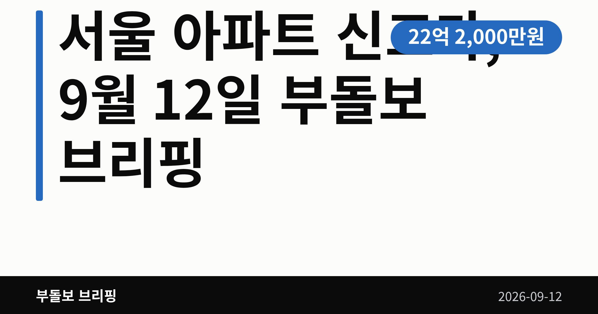
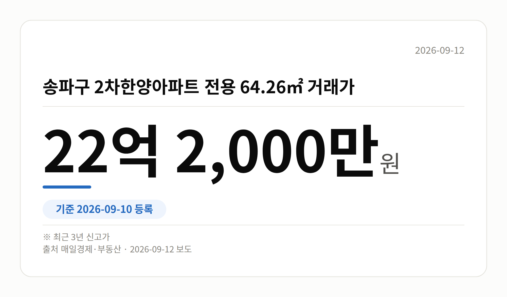
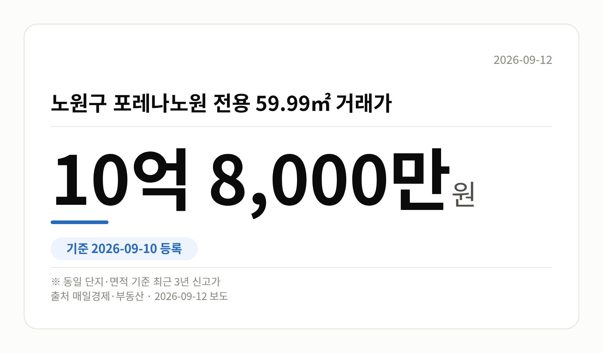

이 글은 2026년 9월 12일 기준으로 정리한 내용입니다.
9월 10일 국토부 실거래가 시스템에 새로 등록된 거래에서 서울 아파트 신고가가 잇따라 확인됐습니다. 송파·동작·구로·노원·도봉·중랑·금천 등 여러 자치구의 12개 단지가 최근 3년 내 가장 높은 값에 손바뀜했습니다.
다만 이건 개별 단지의 개별 거래 기록입니다. 서울 전체가 오른다는 통계는 오늘 자료에 없습니다.

가장 높은 금액은 송파구 2차한양아파트였습니다. 전용 64.26㎡가 22억 2,000만 원에 거래되며 최근 3년 신고가를 기록했습니다.
동작구 상도두산위브 전용 84.99㎡는 17억 2,000만 원이었습니다. 도심권만이 아니라 서남·동북권 중저가 단지에서도 같은 흐름이 나타났습니다.
| 단지(자치구) | 전용면적 | 거래가 |
|---|---|---|
| 2차한양(송파) | 64.26㎡ | 22억 2,000만 원 |
| 상도두산위브(동작) | 84.99㎡ | 17억 2,000만 원 |
| 개봉동 한마을(구로) | 84.57㎡ | 11억 7,000만 원 |
| 금천롯데캐슬골드파크3차(금천) | 59.97㎡ | 11억 2,000만 원 |
| 포레나노원(노원) | 59.99㎡ | 10억 8,000만 원 |
| 가산동 두산(금천) | 84.9㎡ | 8억 8,000만 원 |
| 상봉동 엘지,쌍용(중랑) | 68.12㎡ | 8억 2,400만 원 |
| 쌍문동 한양2(도봉) | 84.9㎡ | 6억 5,000만 원 |
이 밖에 구로구 한일유앤아이 전용 84.962㎡ 8억 2,000만 원, 노원구 불암현대 전용 59.4㎡ 5억 6,500만 원, 한신1차 전용 53.96㎡ 5억 2,000만 원, 상계주공13단지 전용 45.55㎡ 4억 6,500만 원도 같은 날 신고가 목록에 올랐습니다.

특정 구에 몰리지 않고 일곱 개 자치구에 흩어져 있다는 점이 눈에 띕니다. 국지적으로 매수심리가 살아 있다는 신호로 읽힙니다.
그런데 신고가(같은 단지·같은 면적에서 최근 3년 중 가장 높은 값)는 단 한 건만 있어도 성립합니다. 매매가격지수나 거래량 같은 전체 통계가 함께 있어야 방향을 말할 수 있습니다.
오늘 브리핑에는 그 통계가 없습니다. 거래일과 층수 같은 세부 정보도 확인되지 않았습니다. 그래서 서울 아파트 신고가 사례는 참고 자료로 두고, 관심 단지의 거래 건수를 직접 세어 보시는 편이 안전합니다.
여러분이 눈여겨보는 단지는 최근 1년 사이 거래가 몇 건이나 쌓였나요?
댓글로 알려 주시면 다음 글에 반영하겠습니다.